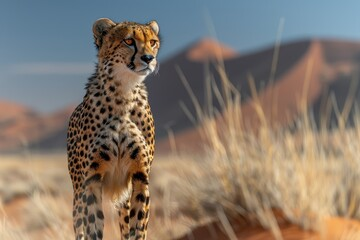

Practice 3
Check to see if things have changed and working correctly.

I copied 20 random facts from ChatGPT
Honey Never Spoils: Archaeologists have found pots of honey in ancient Egyptian tombs that are over 3,000 years old and still perfectly edible.
Bananas Are Berries: Botanically, bananas qualify as berries, while strawberries do not.
Octopuses Have Three Hearts: Two pump blood to the gills, while the third pumps it to the rest of the body.
Wombat Poop is Cube-Shaped: This unique shape prevents the poop from rolling away and helps mark their territory.
A Day on Venus: It takes longer for Venus to rotate on its axis (243 Earth days) than it does to orbit the Sun (225 Earth days).
Cows Have Best Friends: Studies show that cows can become stressed if separated from their companions.
A Group of Flamingos is Called a "Flamboyance": This colorful name reflects their vibrant appearance.
Sharks Are Older Than Trees: Sharks have existed for around 400 million years, while trees appeared about 350 million years ago.
Humans Share 60% of Their DNA with Bananas: While we are very different, the genetic material is surprisingly similar at a basic level.
A Jiffy is an Actual Unit of Time: It’s defined as 1/100th of a second.
Oxford University is Older Than the Aztec Empire: Teaching at Oxford began in 1096, while the Aztec Empire was founded in the early 14th century.
Dolphins Have Unique Names: They use specific whistles to identify and call each other.
The Eiffel Tower Can Be 15 cm Taller: It expands in the heat of summer due to thermal expansion of the metal.
Some Cats are Allergic to Humans: Just as humans can be allergic to cats, some cats can also be allergic to human dander.
The Shortest War in History Lasted 38 Minutes: It was fought between Britain and Zanzibar on August 27, 1896.
The World's Largest Desert is Antarctica: Despite being covered in ice, it qualifies as a desert due to its low precipitation.
Venus Flytraps Can Count: They have a trigger mechanism that allows them to count the number of times their sensitive hairs are touched.
A Blue Whale's Heart Weighs as Much as a Car: The heart of a blue whale can weigh about 400 pounds (181 kg).
The Smell of Rain is Called Petrichor: This pleasant scent comes from oils released from the ground during rainfall.
There Are More Stars in the Universe Than Grains of Sand on All Earth’s Beaches: Estimates suggest there are about 100 billion galaxies, each with millions or billions of stars.